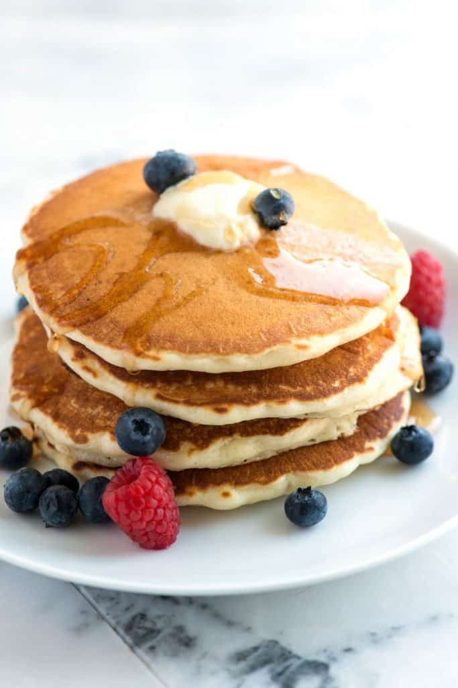

Pancakes

Description
Fluffy, soft pancake made from scratch using simple ingredients
Ingredients
- Flour
- Sugar
- Baking Powder
- Egg
- milk
- Vanilla essence
Steps
- Melt the butter and set it aside.
- In a medium bowl, whisk together the flour, sugar, baking powder, and salt
- In a separate bowl, whisk together milk, egg, melted butter, and vanilla essence
- Create a well in the centre of your dry ingredients
- Pour in the milk mixture and stir gently with a fork until the flour is just mixed together
- Place a large skillet over medium heat. Sprinkle in a few drop of water to test if it's ready.
- Brush the skillet with melted butter
- Scoop the batter onto the skillet using a 1/4 cup measure or large cookie scoop and spread around
- After 1 or 2 minutes, the edge will look dry and bubble will form and pop on the surface.
- Flip the pancake and cook for another 1-2 minutes until golden brown
- Serve immediately with butter and mix berries